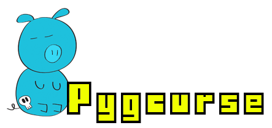
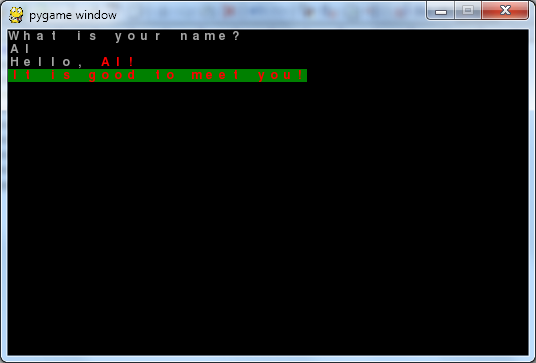
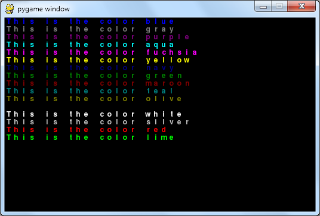
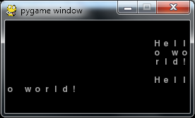
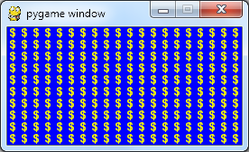
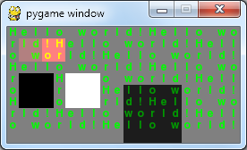
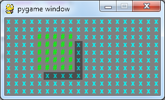
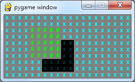
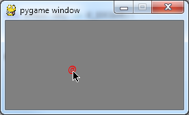
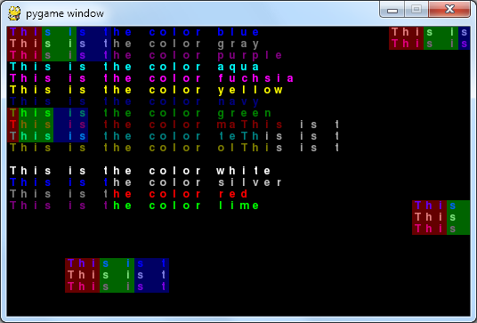

Pygcurse requires Pygame to be installed. Pygame can be downloaded from http://pygame.org
This tutorial is designed for Python 3. If you have Python 2 installed, the differences will be noted in blue boxes like these. The same pygcurse.py file can be used with either version.It should be noted that Pygcurse handles unicode as well as Pygame and your selected font handles unicode. If it cannot display a character, it shows a rectangle box. (I've run into some issues with the extended characters, but these seem to by Pygame issues.)
Using the Pygcurse module is super easy. Here's a simple "Hello World" program.
import pygcurse
win = pygcurse.PygcurseWindow(40, 25, 'Hello World Program')
win.pygprint('Hello world!')
pygcurse.waitforkeypress()
The first line imports the Pygcurse module. The second line creates a PygcurseWindow object that has 40 columns and 25 rows, (resulting in 40 x 25 = 1000 character positions, which are called "cells") and "Hello World Program" as the window's caption in the title bar. The third line prints out the text "Hello world!" and then the fourth line waits for the user to press a key before terminating the program. (Without this last line, the program would immediately quit right after printing the "Hello world!" string and you wouldn't have time to see it.
The reason the method is named pygprint() instead of print() is that print is a keyword in Python 2. To make your code compatible with both Python 2 and 3, Pygcurse could not make the method named print().
Let's do another simple program that mimics basic Python text programs:
import pygcurse
win = pygcurse.PygcurseWindow(40, 25)
win.pygprint('What is your name?')
name = win.input()
win.write('Hello, ')
win.fgcolor = 'red'
win.write(name + '!\n')
win.colors = ('red', 'green')
win.pygprint('It is good to meet you!')
pygcurse.waitforkeypress()

Notice that the PygcurseWindow object also has an input() method, which works similar to Python's input() function.
Pygcurse for Python 2 and 3 have a method called raw_input() that is the exact same as the input() method, if you prefer using that name,
There is also a write() method, which behaves similar to the sys.stdout.write() function. (That is, it prints without the newline character at the end.) Notice how you can change the foreground color by setting the fgcolor attribute to the string 'red'. The bgcolor attribute works the same way for the background color. If you want to set both in one line, set the colors attribute to a tuple (the foreground color first, then the background color)
Along with the fgcolor, bgcolor, and colors attributes, several of the PygcurseWindow methods take fgcolor and bgcolor keyword arguments. For example, you can call win.write('Hello world', fgcolor='blue', bgcolor='green') to print the string with blue text on a green background. This doesn't change the colors that the PygcurseWindow is set to like setting the fgcolor and bgcolor attributes. It only applies for the one function call.
The full list of color strings is found in the pygcurse.colornames dict, which has keys of strings and values of pygame.Color objects. They are:
'white'
'yellow'
'fuchsia'
'red'
'silver'
'gray'
'olive'
'purple'
'maroon'
'aqua'
'lime'
'teal'
'green'
'blue'
'navy'
'black'
If you wish to use other color strings, you can add them to the pygcurse.colornames dictionary.
Also, you can use pygame.Color objects directly, such as win.write('Hello world', fgcolor=pygame.Color(255, 0, 0))
Finally, you can also simply pass a tuple of three (or four, if you want to specify an alpha value) integers of 0 to 255 to specify the color: win.write('Hello world', fgcolor=(255, 0, 0))
Any of these three formats can be used. (They are all converted to pygame.Color objects by the pygcurse.getPygameColor() function.)
Take a look at this sample program and its output:
import pygcurse
win = pygcurse.PygcurseWindow(40, 25)
for k in pygcurse.colornames:
win.write('This is the color %s\n' % (k), fgcolor=k)
pygcurse.waitforkeypress()

Whenever you call the pygprint() or write() methods, the text appears where the screen cursor is. The cursor starts at cell 0, 0 (in the top left corner of the screen) and is set to the first cell after the printed text. However, you can also set the cursor position directly:
import pygcurse
win = pygcurse.PygcurseWindow(40, 25)
win.cursor = (20, 10)
win.write('Hello world!')
win.cursory = 11
win.write('Howdy!')
win.write('Ohiyo gozaimasu!', x=20, y=12)
pygcurse.waitforkeypress()
By moving the cursor, you can tell Pygcurse where to output your text. The pygprint(), write() and putchars() methods also all have x and y keyword arguments that can dictate where the text for those calls should start.
Occasionally you might want to save the current position of the cursor and restore it later. You can call the pushcursor() and popcursor() methods to save and restore the current cursor position respectively.
There are a few different PygcurseWindow methods for displaying text. The differences between them are:
import pygcurse
win = pygcurse.PygcurseWindow(20, 10)
win.putchars('Hello world!', x=16, y=2, indent=True)
win.putchars('Hello world!', x=16, y=6)
pygcurse.waitforkeypress()
Several of the methods in Pygcurse affect an area of the screen. For example, the fill() method fills up every cell of the PygcurseWindow object with a certain character, foreground color, and background color:
import pygcurse
win = pygcurse.PygcurseWindow(20, 10)
win.fill('$', fgcolor='yellow', bgcolor='blue')
pygcurse.waitforkeypress()
However, you may not want to fill the entire screen up like this. You might only want to fill a portion of the screen. The fill() method (and several other methods in Pygcurse) has a "region" keyword arguments that let you do this. By default, region is set to None unless you specify otherwise. Here is how it is interpretted:
Each cell has a set foreground and background color. However, in addition it can also have a tint. A tint is a three-tuple of integers from -255 to 255 which is added to the existing RGB color of the foreground and background colors. A tint of (0, 0, 0) is completely clear and does not affect the cell's color (this is the default tint of every cell to begin with). A tint of (50, 0, 0) adds 50 to the Red value of the cell's displayed foreground and background color (the actual foreground and background color setting of the cell is not changed.)
Shadow and lighting effects can be made by using the same value for each of the three values (red, green, and blue). For example, a tint of (-50, -50, -50) will darken the color, making it look like it is shaded. Look at this program for an example:
import pygcurse
win = pygcurse.PygcurseWindow(20, 10)
win.colors = ('lime', 'gray')
win.write('Hello world!' * 30)
win.settint(50, 0, 0, (1, 1, 2, 2))
win.settint(255, 0, 0, (3, 1, 2, 2))
win.settint(-100, -100, -100, (10, 5, 5, 5))
win.settint(-255, -255, -255, (1, 4, 3, 3))
win.settint(255, 255, 255, (5, 4, 3, 3))
win.update()
pygcurse.waitforkeypress()

Remember, the tint does not affect the fgcolor or bgcolor value of a particular cell. It only affects the displayed color.
There are several methods that are used to change the tint. They all take XYWHR arguments to specify the area of cells that they affect.import pygcurse
win = pygcurse.PygcurseWindow(20, 10)
win.colors = ('aqua', 'gray')
win.fill('x')
win.fgcolor = 'lime'
win.fill('#', region=(4, 2, 5, 5))
win.addshadow(region=(4, 2, 5, 5))
win.update()
pygcurse.waitforkeypress()

The addshadow() method has several keyword arguments for customizing the shadow. For example, the amount keyword argument can be set to an integer from -255 to 255. (This is identical to the amount keyword argument for the darken() method.) The offset keyword argument can change how far away the shadow is. For example, if we changed the addshadow() call in the previousto this:
win.addshadow(amount=200, offset=2, region=(4, 2, 5, 5))
Then this is what it would look like:
The direction keyword argument changes where the shadow is cast. By default it is set to pygcurse.SOUTHEAST. The pygcurse module has constant variables for all eight directions:NORTH, NORTHWEST, NORTHEAST, WEST, EAST, SOUTH, SOUTHWEST, SOUTHEAST.
Normally the amount the shadow is offset is equal in the x and y directions. However, the xoffset and yoffset will override the direction and offset keyword arguments. Remember that a positive offset moves to the right and down, while a negative offset moves to the left and up.
There are two Cartesian coordinate systems for Pygcurse programs: the cell coordinates (used for text characters) and the pixel coordinates (used for pixels). They both have their 0, 0 origin start in the upper left corner of the window, and have their X axis increase going right and Y axis increase going down. In Pygcurse, coordinates/width/height refers to the cell coordinates. If they refer to pixel coordinates, they are called "pixelwidth" or "pixelx", etc. Here are the PygcurseWindow attributes that track different measurements:
| PygcurseWindow Attribute | Description |
| width & height | The number of cells wide and tall the window is. |
| size | Tuple of two integers: (width, height) |
| pixelwidth & pixelheight | The number of pixels wide and tall the window is. |
| pixelsize | Tuple of two integers: (pixelwidth, pixelheight) |
| cellwidth & cellheight | The number of pixels wide and tall each cell is. |
| cellsize | Tuple of two integers: (cellwidth, cellheight) |
(Currently the cellwidth. cellheight, and cellsize attributes are read-only.)
The obvious equation to convert between the two systems is cellx = int(pixelx / cellwidth) and pixelx = cellx * cellwidth. But to make it easy, there are also PygcurseWindow methods to do these conversions and a few other helpful things:
| PygcurseWindow Method | Description |
| gettopleftpixel(cellx, celly, withinBoundaries=True) | Returns a tuple (x, y) of the pixel coordinates for the cell's top left pixel. |
| gettoppixel(celly, withinBoundaries=True) | Returns the Y pixel coordinate of the cell's top left pixel. |
| getleftpixel(cellx, withinBoundaries=True) | Returns the X pixel coordinate of the cell's top left pixel. |
| getcoordinatesatpixel(pixelx, pixely, withinBoundaries=True) | Returns a tuple (x, y) of the cell coordinates that the pixel is in. |
| getcharatpixel(pixelx, pixely, withinBoundaries=True) | Returns the character in the cell that the pixel is in. |
NOTE: The withinBounaries parameter, when set to True, will return (None, None) or None if the parameters fall outside the window (that is, less than 0 or greater than the width/height).
ANOTHER NOTE: Instead of passing two separate values for the cellx & celly (or pixelx & pixely) parameters, you can just pass a two-integer tuple for the cellx/pixelx parameter, and the method will understand that the coordinates are both in that parameter.
There are also read-only attributes for getting the cell coordinates of the various edges and midpoints, just like there are for pygame.Rect objects:
| PygcurseWindow Attribute | Description |
| left, top | Always set to 0. |
| right, bottom | Always set to width - 1 and height - 1 |
| centerx, centery | The center row/column |
| center | Tuple of two integers: (centerx, centery) |
| topleft, topright, bottomleft, bottomright | Tuple of two integers |
| midleft, midright | Tuple of two integers: (left, centery) and (right, centery) |
| midtop, midbottom | Tuple of two integers: (centerx, top) and (centerx, bottom) |
| rect | A pygame.Rect object set to the cell coordinates of the entire window. |
| pixelrect | A pygame.Rect object set to the pixel coordinates of the entire window. |
So if you want to display a string of text in the center row of the window, you can use this code: win.pygprint('Hello world!', y=win.centery)
Pygcurse doesn't have any code that deals with the mouse. You simply check for MOUSEMOTION events from pygame.event.get() as you would in any normal Pygame program. The getcoordinatesatpixel() PygcurseWindow method will be helpful for converting from the mouse event's pixel coordinates to the PygcurseWindow object's cell coordinates. This program displays a red "@" character where the mouse is:
import pygcurse, pygame, sys
from pygame.locals import *
win = pygcurse.PygcurseWindow(20, 10)
win.colors = ('red', 'gray')
cellx = 0
celly = 0
while True:
win.setscreencolors(None, 'gray', clear=True)
for event in pygame.event.get():
if event.type == QUIT or (event.type == KEYDOWN and event.key == K_ESCAPE):
pygame.quit()
sys.exit()
if event.type == MOUSEMOTION:
cellx, celly = win.getcoordinatesatpixel(event.pos)
win.putchar('@', x=cellx, y=celly)


You may have noticed that the mouse program flickers considerable. This is caused because by default PygcurseWindow objects try to handle updating the screen automatically whenever you call a method that changes the screen. However, you may want to update the screen several times, and then have the PygcurseWindow update itself on the screen. In the previous mouse program, the setscreencolors() method call grays out the entire screen (erasing any previous drawn @ character). Then the putchar() method call draws the @ character. Because the entire window is constantly being grayed out, it looks like the @ character is flickering.
We can fix this by disabling the autoupdate attribute of the PygcurseWindow object (which is set to True by default.) Of course, this means that we will have to call the PygcurseWindow.update() method ourselves when our code is ready to draw the Pygcurse window to the screen. Here's a non-flicker version of the mouse program (with two new lines):
import pygcurse, pygame, sys
from pygame.locals import *
win = pygcurse.PygcurseWindow(20, 10)
win.colors = ('red', 'gray')
cellx = 0
celly = 0
win.autoupdate = False # THIS DISABLES THE AUTOUPDATE FEATURE
while True:
win.setscreencolors(None, 'gray', clear=True)
for event in pygame.event.get():
if event.type == QUIT or (event.type == KEYDOWN and event.key == K_ESCAPE):
pygame.quit()
sys.exit()
if event.type == MOUSEMOTION:
cellx, celly = win.getcoordinatesatpixel(event.pos)
win.putchar('@', x=cellx, y=celly)
win.update() # THIS IS THE NEW CALL TO THE UPDATE() METHOD
Having the autoupdate feature enabled can be handy because otherwise you'd have to call the update() method each time you called a pygprint() or putchars() or fill() method (or any other method that changes the content of the window). But if your program is constantly redrawing the entire window like our mouse program, then it makes sense to disable autoupdate.
Pygcurse lets you copy the characters, foreground color, background color, and tint properties of a rectangular region of cells and then paste it to other parts of the PygcurseWindow. The copy() method returns a new PygcurseSurface object (which is the parent class of PygcurseWindow and has almost all of the same methods) which can then be pasted to another part of the PygcurseWindow. Note that any of the properties can be copied (and the others will be left as None.) For example, look at the code below:
import pygcurse
win = pygcurse.PygcurseWindow(40, 25)
for k in pygcurse.colornames:
win.write('This is the color %s\n' % (k), fgcolor=k)
win.tint(100, 0, 0, region=(0, 0, 3, 3))
win.tint(0, 100, 0, region=(3, 0, 3, 3))
win.tint(0, 0, 100, region=(6, 0, 3, 3))
win.paste((0, 0, 9, 3), win, (5, 20, None, None))
win.paste((0, 0, 9, 3), win, (35, 15, None, None))
win.paste((0, 0, 9, 3), win, (33, -1, None, None))
win.pastechars((0, 0, 9, 3), win, (20, 8, None, None))
win.pastetint((0, 0, 9, 3), win, (-2, 7, None, None))
win.pastecolor((0, 0, 9, 3), win, (0, 13, None, None))
pygcurse.waitforkeypress()

This program adds a red, green, and blue tint to some of the areas in the upper left corner of the window, and then copies that area. It then pastes it around to other XY coordinates on the window. Notice that the pastechars() method call only pastes the characters, and the foreground/background/tint color is the same as it was in the cells before it was pasted. The same goes for the pastetint() method call: only the tint was pasted, but not the text, foreground color, or background color.
Here's a list of the various copy and paste methods for copying the various properties of a rectangular region of cells. Note that the first five parameters of the copy methods are the XYWHR parameters, and have been omitted for brevity.
| Copy / Paste Method | Description |
| paste(self, dstsurf, dstregion, srcregion=None, pastechars=True, pastefgcolor=True, pastebgcolor=True, pasteredtint=True, pastegreentint=True, pastebluetint=True) | Paste the every property of the contents of the PygcurseWindow to the PygcurseWindow in dstsurf with the top left corner at 0, 0 or specify which ones are pasted or not. |
| pastechars(self, dstsurf, dstregion, srcregion=None) | Paste only the characters. |
| pastecolor(self, dstsurf, dstregion, srcregion=None, pastefgcolor=True, pastebgcolor=True) | Paste only the foreground and/or background colors. |
| pastetint(self, dstsurf, dstregion, srcregion=None, pasteredtint=True, pastegreentint=True, pastebluetint=True) | Paste only the tints. |
To convert a stdio Python program into a Pygcurse program, just add the following lines to the beginning. Note that this only works for Python 3.
import pygcurse
win = pygcurse.PygcurseWindow(40, 25, 'Your window caption here.')
print = win.pygprint
input = win.input
win.setscreencolors('lime', 'blue', clear=True)
It is important that you specify clear=True for the setscreencolors() call, otherwise you might get weird trails of text when the screen scrolls. You can see an example of this with the demo_tictactoe.py and demo_reversi.py programs that come with Pygcurse.
For Python 2, the situation is a bit different since print is not a function and the name of input() is raw_input(). In that case, just use these six lines:
import sys
import pygcurse
win = pygcurse.PygcurseWindow(40, 25, 'Your window caption here.')
sys.stdout = win
raw_input = win.raw_input
win.setscreencolors('lime', 'blue', clear=True)
Pygcurse comes with some limited drawing functions. Currently there are only functions for drawing "lines" of text characters. They are both methods of PygcurseWindows
drawline(self, start_pos, end_pos, char=' ', fgcolor=None, bgcolor=None) - Where start_pos and end_pos are two-integer tuples that give XY cell coordinates.
drawlines(self, pointlist, closed=False, char=' ', fgcolor=None, bgcolor=None) - Where pointlist is a list/tuple of two-integer tuples that give XY cell coordinates. If closed is True, then there will be a line drawn from the last point to the first point.
fill(self, char=' ', fgcolor=None, bgcolor=None, region=None) - Not so much a drawing function, but if you need to draw a filled in rectangular space, then the fill() method can do this.
Currently there is no circle or polygon functions, or anti-aliased versions of these functions.
"Reversing" the foreground and background color means setting the foreground color to be the background color and the background color to be the foreground color. "Inverting" a color means to set the color to it's inverse color (the color red has RGB values 255, 0, 0 while it's inverse has RGB values of 0, 255, 255, which is aqua). These can be done with the following PygcurseWindow methods:
| Inverse/Reverse Method | Description |
| invertcolors(self, region=None) | Invert the foreground and background colors of the specified cells. |
| invertfgcolor(self, region=None) | Invert only the foreground color. |
| invertbgcolor(self, region=None) | Invert only the background color. |
| reversecolors(self, region=None) | Reverse the foreground and background colors. |
Note that these functions do not change the PygcurseWindow's set foreground or background color. They only modify the foreground and/or background color of the cells specified in the region parameter. Here is a short example program that demonstrates reversion and inversion (comment the reversecolors() call and uncomment the invertcolors() call to see the effects of inversion):
import pygcurse
win = pygcurse.PygcurseWindow(20, 10)
win.colors = ('red', 'green')
win.write('The Ojibway aboriginal people in North America used cowry shells which they called sacred Miigis Shells.')
while True:
pygcurse.waitforkeypress()
win.reversecolors()
#win.invertcolors()
If you need to display text in a rectangular area, the PygcurseTextbox class can help you easily manage this. It has options for setting up a border, doing word-wrapping, and it handles displaying the textbox even if it is partially off the screen. Here is the constructor function (note that most of the parameters have default values and are optional, only the pygsurf parameter is required):
PygcurseTextbox(pygsurf, region=None, fgcolor=None, bgcolor=None, text='', wrap=True, border='basic', caption='', margin=None, marginleft=0, marginright=0, margintop=0, marginbottom=0, shadow=None, shadowamount=51)Here's an explanation of each of these parameters:
| PygcurseTextbox Constructor Parameter | Description |
| pygsurf | Required. This is the PygcurseWindow or PygcurseSurface object that this textbox will appear on. This can be changed later by assigning a new one to the pygsurf attribute. |
| region | The total size and position of the textbox, including the border and margins. |
| fgcolor, bgcolor | The foreground and background colors of the textbox. The foreground color is also used for the border characters (if there is one). Currently PygcurseTextbox doesn't support multiple foreground/background colors. |
| text | The text you want to appear in the textbox. |
| wrap | If True, then word wrapping is enabled. Otherwise the words will be broken across new lines. |
| border | Can be set to None, 'basic', 'rounded', or a single-character string. None disables the border. The 'basic' style uses - and | characters for the sides and + for the corners. The 'rounded' style uses / and \ characters for the corners. The single-character string style will use that character for the border. |
| caption | The caption is a bit of text that will appear on the top row of the text box. If the textbox has a border, then the caption will appear embedded inside the border. |
| margin, marginleft, marginright, margintop, marginbottom | The margin parameter is an integer that sets how much space should be between the border and the text in the textbox. The marginleft, marginright, margintop, and marginbottomcan optionally be specified to override the margin parameter. |
| shadow, shadowamount | The shadow parameter (if not set to None) makes a shadow displayed for the textbox. The shadow parameter is set to one of Pygcurse's directional constants (i.e. pygcurse.NORTHWEST, pygcurse.EAST, or pygcurse.SOUTHEAST, etc.). The shadowamount is how dark you want the shadow to be. 255 is maximum blackness, while -255 is maximum whiteness. |
The textbox is drawn to its associated PygcurseWindow object by calling its update() method. The parameter names are also used for attribute names, which can be set to change the PygcurseTextbox object after it has been created. See the demo_textboxtest.py program for example code:

Because Pygcurse is built on top of Pygame, you can use all of Pygame's drawing functions on the PygcurseWindow object. This means that your programs are not limited to only ascii characters.
resize(self, newwidth=None, newheight=None, fgcolor=None, bgcolor=None)
A PygcurseWindow or PygcurseSurface object can only display one font and size at a time, but you can change the font and size by assigning a new pygame.font.Font object to the font. The following program displays the default system fontCont at various sizes:
import pygcurse, pygame
win = pygcurse.PygcurseWindow(20, 10)
win.write('The Ojibway aboriginal people in North America used cowry shells which they called sacred Miigis Shells.')
pygcurse.waitforkeypress()
win.font = pygame.font.Font(None, 42)
pygcurse.waitforkeypress()
win.font = pygame.font.Font(None, 8)
pygcurse.waitforkeypress()
Pygcurse has some functions for debugging. They each have a returnStr parameter which is False by default. If True, then the debug method will return a multiline string with the debug info. If False, then it will write it to sys.stdout. The debug messages just create strings that mimic the current layout of the PygcurseWindow's various properties. They are: _debugchars, _debugfg, _debugbg, _debugdirty.
TODO - Will be filled in later. These are just extra functions that exist in the pygcurse module, not as PygcurseWindow methods.